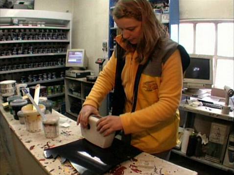
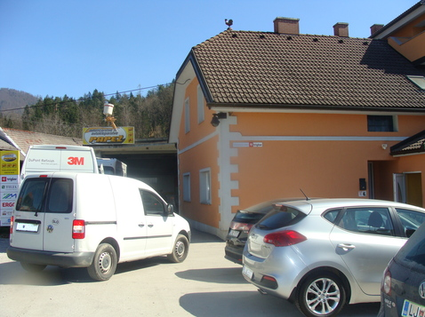

Avtokleparstvo in avtoličarstvo
Popravila karoserijsko poškodovanih vozil po prometnih nesrečah, toči ali obrabi. Osebna in tovorna vozila.
Podjelše 2, Kamnik · družinska delavnica
Karoserijska popravila osebnih in tovornih vozil, lastna mešalnica barv in lakirna komora. Pogodbe z zavarovalnicami, cenitve in nadomestno vozilo, dokler je vaš avto pri nas.

Kaj delamo
Popravila karoserijsko poškodovanih vozil po prometnih nesrečah, toči ali obrabi. Osebna in tovorna vozila.
Natančni odtenki na osnovi vodnih barv, prilagojeni originalnemu odtenku vozila. Sistemi DuPont, PPG, Standox in Mipa.
Udrtine izravnamo od znotraj ali zunaj, brez kitanja in barvanja. Originalni lak ostane.
Med popravilom dobite urejeno nadomestno vozilo, da nemoteno opravljate vsakodnevne obveznosti.
Menjava na vseh vrstah vozil. Manjšo razpoko ali udarec popravimo brez menjave.
Celovita obnova od karoserije do barve in notranjosti.
Protikorozijska zaščita podvozja, pragov in votlih delov pred zimsko soljo.
Popravilo, zaščita in lakiranje aluminijastih in jeklenih platišč.
Lepljenje, varjenje in zalivanje. Celotno, delno ali reparaturno ličanje odbijača.
Poliranje odstrani porumenelost in motnost ter izboljša svetilnost.
Poliranje, ročno pranje, globinsko čiščenje notranjosti. Tudi priprava avta za prodajo ali tehnični pregled.
Optika vozil in pregled pred tehničnim pregledom. Avtomehanične storitve v sodelovanju z zunanjimi izvajalci.
Škodni primer
Pri škodnem dogodku formalnosti uredite na enem mestu: cenitev vozila, zavarovalniški postopek, popravilo in nadomestno vozilo.
Cenitve vozil opravljamo za Zavarovalnico Triglav.
Podjelše 2
Sodobno opremljena delavnica z lakirno-sušilno komoro in lastno mešalnico barv. Delamo na osebnem in tovornem programu vozil.




V ekipo vabimo avtoličarja in pomočnika avtoličarja za dela na osebnih in tovornih vozilih. Možna je tudi priučitev. Pišite na info@avtolicarstvo-papez.si.
Kontakt